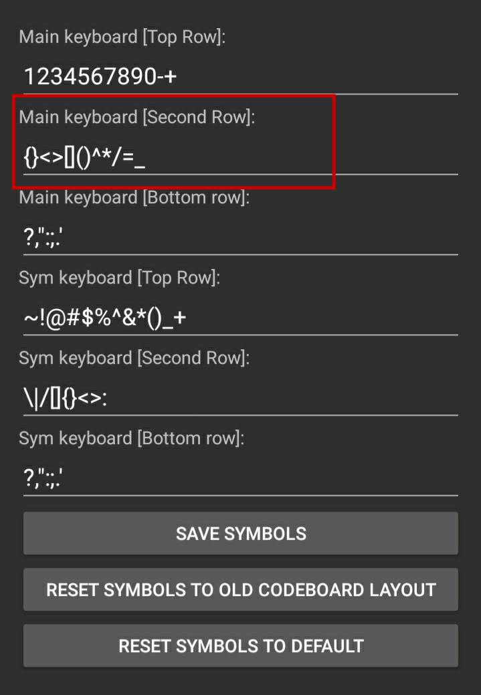

In many engineering disciplines, students have to solve problems which are not necessarily numeric. For example, they have to compute the determinant of a matrix that has some non-numeric elements. For this reason, symbolic libraries are the best tool to use and since nowadays all people have powerful mobile phones, I am going to show you how you can use your mobile as an engineering calculator like Casio Classpad or TI calculator.
Although Classpad has an app on google play, it has limited features that want you to sign up first, besides that it does not have a perfect U
You can also install Julia on Termux, and you can use QuickEdit text editor but those apps are not discussed here.
Install Termux from google play
Install CodeBoard from google play
Open the CodeBoard app and edit the line which shows (Main keyboard [Second Row])
Open Termux, and wait for the installation to complete. Then to update the packages type the following command (it may ask you a confirmation to enter Y and enter to continue)
$ pkg upgrade
Now you need to install Python:
$ pkg install python
Now you should update pip package manager first:
$ pip install –upgrade pip
The next step is to install sympy itself (it is preferred to install ipython also):
$ pip install sympy ipython
now instead of importing sympy and then defining every single symbol, you can easily start isympy with -a flag to automatically create missing symbols.
$ isympy -a